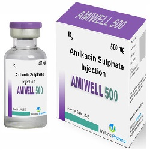

Amikacin ဆေးအကြောင်းသိကောင်းစရာအဖြာဖြာ

Amikacin ဆိုတာဘာဆေးလဲ
- Amikinလို့လည်းခေါ်တဲ့ Amikacin ဆေးဟာ Bacteria ပိုးအမျိုးမျိုးကို ကုသမှုနှင့်ကာကွယ်မှုတွင် သုံးတဲ့ဆေးဖြစ်တယ်။ Bacteria ပိုးပွားခြင်းကိုရပ်တန့်ပေးတဲ့ Aminoglycoside ပိုးသတ်ဆေးတစ်မျိုးဖြစ်တယ်။ ထိုးဆေးအနေနှင့်အဓိကသုံးတယ်။
Amikacin ဆေးကိုဘယ်ရောဂါတွေမှာသုံးလဲ
- ဦးနှောက်အမြှေးပါးရောင်ခြင်း
- အဆုတ်ရောင်ခြင်း
- ကိုယ်တွင်းဝမ်းခေါင်းပိုးခြင်း
- ဆီးလမ်းကြောင်းပိုးဝင်ခြင်း
- အရိုးအဆစ်များ ပိုးဝင်ကိုက်ခဲခြင်း နှင့်
- ခန္ဓာကိုယ်သွေးဆိပ်တက်ခြင်း များမှာသုံးပါတယ်။
ဆေး၏ဘေးထွက်ဆိုးကျိုးဘာတွေရှိလဲ
- ပျို့အန်ခြင်း၊ ခံတွင်းပျက်ခြင်း၊ ဗိုက်နာခြင်း၊ ဆေးထိုးသောနေရာတစ်ဝိုက်တွင် နီ၊ရောင်၊နာခြင်းများဖြစ်တတ်သော်လည်း လက္ခဏပိုဆိုးလာလျှင် နီးစပ်ရာဆေးခန်းကိုသွားပြသင့်သည်။ ခြေ၊ လက်၊ ခန္ဓာကိုယ်ထုံကျဉ်ခြင်း၊ ကြွက်သားအားနည်းခြင်း၊ တက်ခြင်းများဖြစ်ပါက စိုးရိမ်ရသည်။
- ရှားရှားပါးပါးအနေနှင့် ပိုးသတ်ဆေးသုံးစဉ် ပိုးသတ်ဆေးအရှိန်ကြောင့် ဝမ်းလျှောတတ်သည်။ ဝမ်းလျှောလျှင်ဝမ်းပိတ်ဆေးသောက်ပါက အန္တရာယ်ရှိသောကြောင့် မသုံးရပါ။
- ဝမ်းအဆက်မပြတ်ကြာကြာသွားခြင်း၊ ဝမ်းထဲသွေးပါခြင်း၊ ချွဲပါခြင်း၊ ဗိုက်အရမ်းနာခြင်းများဖြစ်လျှင် ဆရာဝန်ထံအမြန်သွားပြပါ။
- ပိုးသတ်ဆေးကိုကြာရှည်စွဲသုံးလျှင် (ဒါမှမဟုတ်) ခဏခဏသုံးလျှင် ခန္ဓာကိုယ်ထဲမှ နဂိုရှိသောပိုးများပုံပြောင်းပြီး ပါးစပ်မှက်ခရုပေါက်ခြင်းနှင့် မိန်းမကိုယ်လမ်းကြောင်းပိုးဝင်ခြင်းများဖြစ်တတ်ပါသည်။
- အင်ပျဉ်ထခြင်း၊ ယားယံခြင်း၊ ရောင်ရမ်းခြင်း၊ အသက်ရှုကြပ်ခြင်းစသည့် ဓာတ်မတည့်သောလက္ခဏာပေါ်လျှင် ကျန်းမာရေးစောင့်ရှောက်မှု အမြန်ခံယူသင့်ပါသည်။
ဆေးမသုံးခင်ဘာတွေသိထားရမလဲ
- Amikacin ဆေးနှင့်ဆေးမတည့်ဖူးလျှင်၊ Aminoglycoside ပိုးသတ်ဆေးများ(gentamycin,tobramycin)နှင့် ဆေးမတည့်ဖူးလျှင်၊ အကြားအာရုံပြဿနာ၊ ကျောက်ကပ်၊ သွေးတွင်းရှိသင့်သောဓာတ်များ(potassium,magnesium,calcium)လျော့နည်းလျှင်၊ ကြွက်သားပျော့သောရောဂါ၊ ပါကင်ဆန်ရောဂါရှိလျှင် ဆရာဝန်ကိုကြိုပြောထားရပါမယ်။
- ပိုးသတ်ဆေးသုံးချိန်တွင် ကာကွယ်ဆေးထိုးလျှင် ကာကွယ်ဆေးအာနိသင်မပြနိုင်ပါ။
- ခွဲစတ်မှုပြုလုပ်ရတော့မည်ဆိုလျှင် တာဝန်ကျဆရာဝန်အား မိမိ Amikacin ဆေးသုံးနေသည်ကို ကြိုအသိပေးပါ။
- ကိုယ်ဝန်ဆောင်သည်များတွင် သန္ဓေသားအန္တရာယ်ရှိနိုင်သောကြောင့် ဆရာဝန်နှင့်သေချာတိုင်ပင်ပြီးမှ သုံးသင့်သည်။
- နို့တိုက်မိခင်များတွင် လိုအပ်လျှင် Amikacin ဆေးသုံးနိုင်သည်။
ဆေးအစွမ်းဘယ်လိုတွေရှိလဲ
- Amikacinဆေးနှင့် အခြားကျောက်ကပ်နှင့်အကြားအာရုံထိနိုင်သောဆေးများ(Amphotericin B, Cidofovir, Cisplatin, NSAIDs-ibuprofen)နှင့် တွဲသောက်မိလျှင် ကျောက်ကပ်နှင့်အကြားအာရုံ ဆိုးကျိုးပိုများနိုင်သည်။
ဆေးသောက်များသွားလျှင်ဘာတွေဖြစ်မလဲ
- ပြင်းပြင်းထန်ထန်မူးဝေခြင်း၊ ပျို့အန်ခြင်း၊ ဗိုက်အောင့်ခြင်း၊ အသက်ရှုကြပ်ခြင်းတို့ ဖြစ်နိုင်ကာ အသက်အန္တရာယ်စိုးရိမ်ရသည်။